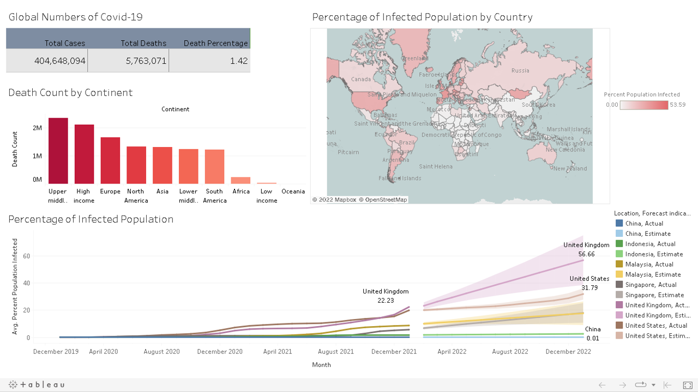
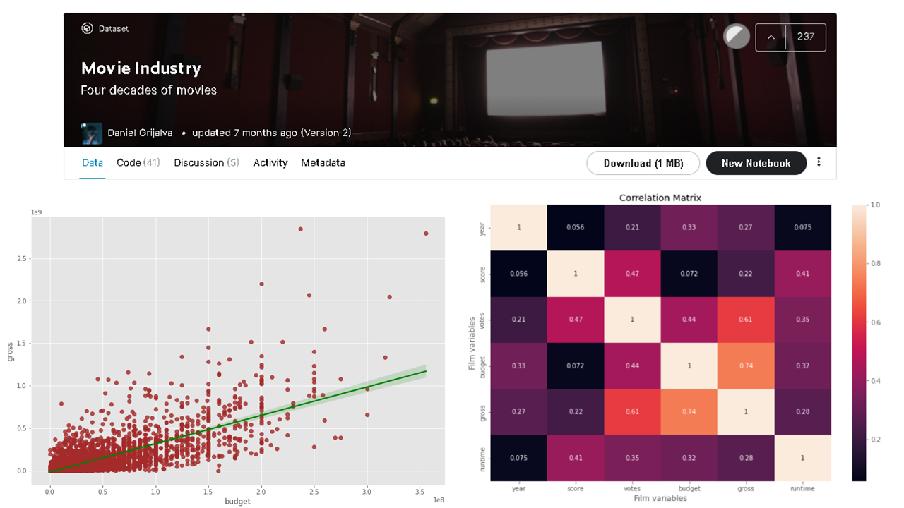

Data Analytics & Me
Started my data analytics journey with Google Data Analytics Professional Certificate; a rigorous, hands-on program
that covers the entire scope of data analysis process, using several tools which are Spreadsheet, SQL, Tableau, and R.
Continue to learn Data Analysis With Python, and Python for Data Science & AI, to upscale my skills.
Getting myself familiarized and well experienced with data working system through various projects.


Data from ourworldindata website is used. The data was explored by location, date, population, total cases, total deaths, and total vaccinations. This information was then used to create views before exporting them into Tableau for visualisation.

Covid-19 Dashboard consists of:
○ Global numbers of Covid-19
○ Death count by Continent
○ Percentage of infected population by Country
○ Forecast of infected population for certain Country

Python-Jupyter notebook was used to dive into the Movie Industry public dataset on Kaggle, by Daniel Grijalva. A little look and cleaning of the data, were done using package Pandas and Numpy. Correlation between variables was done using Scatter plot, regression plot, and heatmap in seaborn and matplotlib packages.
.
To invite casual riders to become a member of a bike company, some questions need to be answered and one of them was how member and casual riders differ in the usage of bike service. Monthly data were downloaded and imported into R Studio and the whole process was done in that platform; exploring, cleaning, simple statistics calculation, and visualization.
Working with date and time, null values, splitting column, boolean, removing duplicates and deleting column. Various statemetns were used such as: UPDATE, ALTER TABLE, JOIN, SUBSTRING(), CASE, and also using CTE.
PDF files were downloaded from supremecourt of US website. Text mining package is used with some other functions. Key points are: Corpus, text document matrix, lapply(), pdf_text, inspect(), findfreqterm().